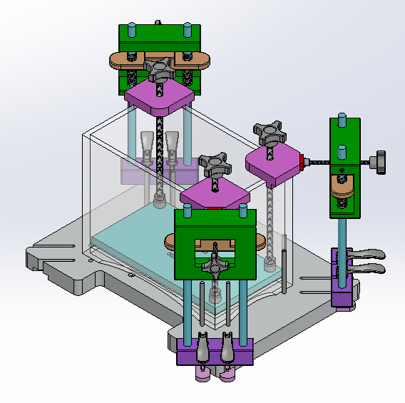
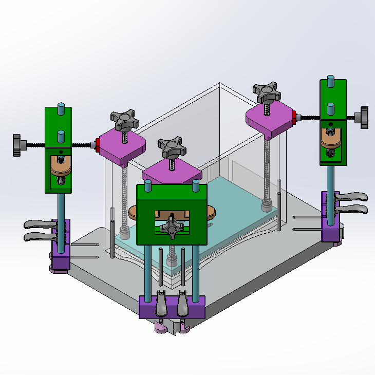
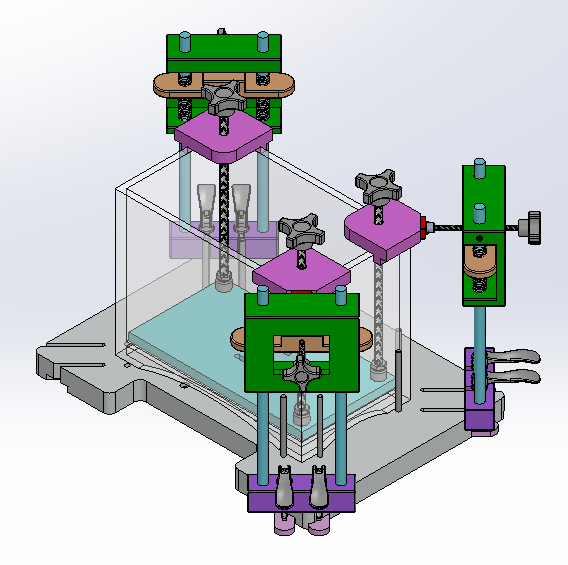
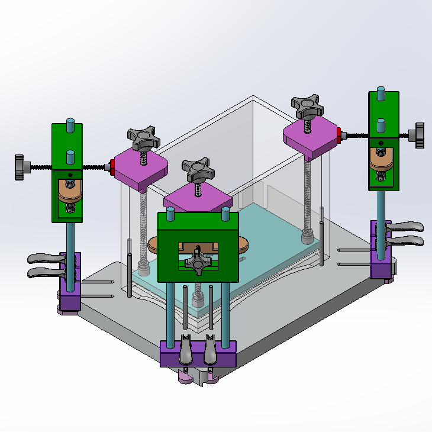

Approach
I first started by understanding the design requirements needed for this fixture.
After chatting with a co-worker who is typically in charge of the fixtures, we were able
to generate some design ideas. I was then able to start drafting these ideas in SOLIDWORKS.
Most of these components were test printed using the FDM. After test printing, getting parts
outsourced and manufactured, and ordering parts from McMaster-Carr, I was able to start the test
assembly. I quickly realized that some mechanisms needed some improvement. For instance, the
corner pieces I created needed to have some slight adjustments in order to keep the piece from
rotating when turning the screw. After small design changes were made, the parts were made out of
Delrin and was fully assembled for testing.
Skills Employed
- SOLIDWORKS 3D CAD model
- Machine shop manufacturing and tool use (tapping, drills, sanding)
- Testing fixture design/mechanical testing
- Instron Tensile Testing

 


